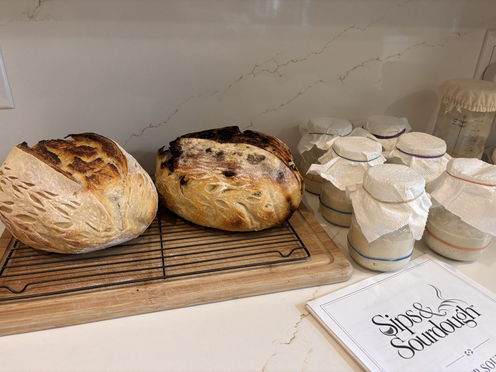

Slicing
Manual bread slicer
Even slices every time, so a crusty loaf doesn't end up in wedges.
View on Amazon.caKeep the bread coming
You don't need much to bake great sourdough at home. These are the tools Tara actually uses in her own kitchen.
As an Amazon Associate I earn from qualifying purchases. It costs you nothing extra and helps support our workshops.

Slicing
Even slices every time, so a crusty loaf doesn't end up in wedges.
View on Amazon.caMeasuring
Sourdough is all about weighing, not cups. This keeps every bake consistent.
View on Amazon.caShaping
A light, even dusting on the counter and banneton without clumps.
View on Amazon.caScoring
Holds a razor blade for clean scoring, so your loaf opens up just where you want it.
View on Amazon.caProofing
Keep dough from drying out during bulk fermentation, and they wash and reuse.
View on Amazon.caMixing
Mixes sticky dough without it clogging up like a spoon or regular whisk.
View on Amazon.caStarter care
A pretty, breathable cover for your starter jar, so Lady Whistledough can breathe.
View on Amazon.caStoring
Keeps the crust happy and the loaf fresh for days, with no plastic.
View on Amazon.caStoring
The bakery way to keep a crusty loaf crusty, and they make a lovely gift wrap for a fresh loaf.
View on Amazon.caStoring
For sliced bread or the freezer, so nothing goes stale before you get to it.
View on Amazon.caIngredients
One of just three ingredients, so it's worth using a good one. Fine grain dissolves easily in dough.
View on Amazon.caBaking
Traps steam like a Dutch oven for a great rise and crust, but gives you a sandwich-shaped loaf.
View on Amazon.caStoring
Airtight and easy to scoop from, perfect for keeping your bread flour fresh and dry.
View on Amazon.caCooling
Let your loaf cool fully on a rack so the bottom doesn't go soggy. The hardest part is waiting!
View on Amazon.caStarter care
A good home for your piece of Lady Whistledough, with room to keep a backup.
View on Amazon.caBaking
The secret to a bakery crust at home. The oval shape fits a long batard loaf perfectly.
View on Amazon.caProofing
Hold your loaf's shape during the cold proof in the fridge, and they're easy to wash.
View on Amazon.caShaping
The tool Tara reaches for most. It lifts sticky dough out of the bowl and cleans the counter in seconds.
View on Amazon.caBaking
Lower your dough into a hot Dutch oven safely, no burnt fingers and no parchment.
View on Amazon.caGather your friends for a hands-on workshop in your home, or grab a seat at one of our public events.